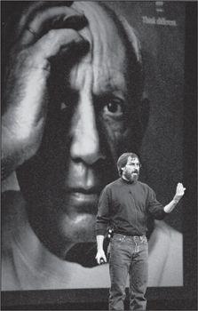

Enlisting Picasso
Lee Clow, the creative director at Chiat/Day who had done the great “1984” ad for the launch of the Macintosh, was driving in Los Angeles in early July 1997 when his car phone rang. It was Jobs. “Hi, Lee, this is Steve,” he said. “Guess what? Amelio just resigned. Can you come up here?”
李·克劳是Chiat\Day广告公司的创意总监，正是他为麦金塔电脑的上市打造了震撼的广告片——“1984”。1997年7月初的一天，他正驾车行驶于洛杉矶，这时车载电话响了，是乔布斯打来的。“嗨，李，我是史蒂夫，”乔布斯说，“你猜怎么着？阿梅里奥刚刚辞职了。你能过来一趟吗？”
Apple was going through a review to select a new agency, and Jobs was not impressed by what he had seen. So he wanted Clow and his firm, by then called TBWA\Chiat\Day, to compete for the business. “We have to prove that Apple is still alive,” Jobs said, “and that it still stands for something special.”
苹果当时正在挑选新的广告代理商，而乔布斯还没有看到满意的。所以他希望克劳和他的公司（当时已经改名为TBWA\Chiat\Day）来参与竞争。“我们必须证明苹果仍然生机勃勃，”乔布斯说，“而且它仍然代表着与众不同。”
Clow said that he didn’t pitch for accounts. “You know our work,” he said. But Jobs begged him. It would be hard to reject all the others that were making pitches, including BBDO and Arnold Worldwide, and bring back “an old crony,” as Jobs put it. Clow agreed to fly up to Cupertino with something they could show. Recounting the scene years later, Jobs started to cry.
克劳说他不参与广告比稿。“你知道我们的水平，”他说。然而乔布斯开始恳求，他说很难拒绝其他参与比稿的广告代理——包括BBDO和阿诺国际传播（ArnoldWorldwide）——而直接起用“老关系”。克劳于是同意带一些创意脚本飞到库比蒂诺。回忆当年的那一幕，乔布斯潸然泪下：
This chokes me up, this really chokes me up. It was so clear that Lee loved Apple so much. Here was the best guy in advertising. And he hadn’t pitched in ten years. Yet here he was, and he was pitching his heart out, because he loved Apple as much as we did. He and his team had come up with this brilliant idea, “Think Different.” And it was ten times better than anything the other agencies showed. It choked me up, and it still makes me cry to think about it, both the fact that Lee cared so much and also how brilliant his “Think Different” idea was. Every once in a while, I find myself in the presence of purity—purity of spirit and love—and I always cry. It always just reaches in and grabs me. That was one of those moments. There was a purity about that I will never forget. I cried in my office as he was showing me the idea, and I still cry when I think about it.
想到这件事就会让我哽咽，真的让我哽觸。显然，李还是那么爱苹果。他不愧是最棒的广告人。当时他已经10年没有比过稿了。可他来了，他把他的心都掏了出来，因为他和我们一样爱苹果。是他和他的团队带来了这个无与伦比的创意——“非同凡想”，比其他人的要好上10倍。我激动得说不出话来，现在一想到这个我还是忍不住流泪：李那么在乎苹果，还有他那个棒极了的“非同凡想”。每当我发现自己身处一种纯粹——一种精神与爱的纯粹之中，我就会忍不住掉眼泪。这感觉就这么撞进了我的心，一下子抓住了我。当时就是这样。那种纯粹我永远都不会忘记。他坐在我的办公室里给我看那些创意，我就忍不住哭了。每次一想到这个我还是忍不住要哭。
Jobs and Clow agreed that Apple was one of the great brands of the world, probably in the top five based on emotional appeal, but they needed to remind folks what was distinctive about it. So they wanted a brand image campaign, not a set of advertisements featuring products. It was designed to celebrate not what the computers could do, but what creative people could do with the computers. “This wasn’t about processor speed or memory,” Jobs recalled. “It was about creativity.” It was directed not only at potential customers, but also at Apple’s own employees: “We at Apple had forgotten who we were. One way to remember who you are is to remember who your heroes are. That was the genesis of that campaign.”
乔布斯和克劳一致认为苹果是世界上最伟大的品牌之一——如果加上感情因素可能排进前五名——但是需要让大家意识到它的与众不同之处。所以他们想要一个品牌形象宣传，而不是一系列突出产品的广告。其创意目的并不是赞美计算机可以做什么，而是赞美富有创造力的人们在计算机的辅助下可以做什么。“这不是在说处理器速度或者内存乔布斯回忆说，“而是在说创造力。”它的目标受众不仅仅是潜在的顾客，还包括苹果自己的员工。“我们苹果的员工已经忘记了自己是谁。要回想起你是谁的方法之一，就是要想起你的偶像是谁。这就是那次宣传活动的缘起。”
Clow and his team tried a variety of approaches that praised the “crazy ones” who “think different.” They did one video with the Seal song “Crazy” (“We’re never gonna survive unless we get a little crazy”), but couldn’t get the rights to it. Then they tried versions using a recording of Robert Frost reading “The Road Not Taken” and of Robin Williams’s speeches from Dead Poets Society. Eventually they decided they needed to write their own text; their draft began, “Here’s to the crazy ones.”
克劳和他的团队尝试了很多种方式去赞美那些“非同凡想”的“狂人”。他们用席尔（Seal）的歌曲《疯狂》（“若不疯狂，便会灭亡……”）做了一段视频，但是没能拿到这首歌的版杈。之后他们又尝试了各种版本，用过美国诗人罗伯特·弗罗斯特（RobertFrost）朗诵《未选择的路》（JheRoadNotTaken）的录音，也用过罗宾·威廉姆斯（RobinWilliams）在《死亡诗社》（DeadPoet-sSociety）中的演讲录音。最终他们决定，需要撰写原创的广告词，于是他们开始写初稿，开头就是：“致疯狂的人……”
Jobs was as demanding as ever. When Clow’s team flew up with a version of the text, he exploded at the young copywriter. “This is shit!” he yelled. “It’s advertising agency shit and I hate it.” It was the first time the young copywriter had met Jobs, and he stood there mute. He never went back. But those who could stand up to Jobs, including Clow and his teammates Ken Segall and Craig Tanimoto, were able to work with him to create a tone poem that he liked. In its original sixty-second version it read:
乔布斯一如既往地要求严格。当克劳的团队飞过去给他看一个版本的广告词时，乔布斯冲着年轻的广告撰稿人爆发了。“这是狗屎！”他咆哮着，“这是广告公司制造出来的垃圾，我恨它！”这是那位年轻的撰稿人第一次见乔布斯，他站在那儿哑口无言。后来他再也没有回去。但是那些能勇敢面对乔布斯的人——包括克劳和他的同事肯·西格尔（KenSegall）以及克雷格·谷本（CraigTanimoto）——成功地跟他一起创作了一段朗朗上口的广告词。在最初的60秒版本中，它是这样的：
Here’s to the crazy ones. The misfits. The rebels. The troublemakers. The round pegs in the square holes. The ones who see things differently. They’re not fond of rules. And they have no respect for the status quo. You can quote them, disagree with them, glorify or vilify them. About the only thing you can’t do is ignore them. Because they change things. They push the human race forward. And while some may see them as the crazy ones, we see genius. Because the people who are crazy enough to think they can change the world are the ones who do.
致疯狂的人。他们特立独行。他们桀骜不驯。他们惹是生非。他们格格不入。他们用与众不同的眼光看待事物。他们不喜欢墨守成规。他们也不愿安于现状。你可以认同他们，反对他们，颂扬或是诋毁他们。但唯独不能漠视他们。因为他们改变了寻常事物。他们推动人类向前迈进。或许他们是别人眼里的疯子，但他们却是我们眼中的天才。因为只有那些疯狂到以为自己能够改变世界的人……才能真正改变世界。
Jobs, who could identify with each of those sentiments, wrote some of the lines himself, including “They push the human race forward.” By the time of the Boston Macworld in early August, they had produced a rough version. They agreed it was not ready, but Jobs used the concepts, and the “think different” phrase, in his keynote speech there. “There’s a germ of a brilliant idea there,” he said at the time. “Apple is about people who think outside the box, who want to use computers to help them change the world.”
其中几句是乔布斯亲自撰写的，包括“他们推动人类向前迈进”那一句。到8月初Macworld大会在波士顿召开时，他们已经有了一个初步的版本，他向自己的团队进行了展示。他们都认为它还不够完善，但乔布斯在他的主题演讲中用上了这些概念以及“非同凡想”这个短语。“一个绝妙的理念正在萌芽，”他说，“苹果品牌代表的，是那些跳出固有模式进行思考的人，那些想用计算机帮助自己改变世界的人。”
They debated the grammatical issue: If “different” was supposed to modify the verb “think,” it should be an adverb, as in “think differently.” But Jobs insisted that he wanted “different” to be used as a noun, as in “think victory” or “think beauty.” Also, it echoed colloquial use, as in “think big.” Jobs later explained, “We discussed whether it was correct before we ran it. It’s grammatical, if you think about what we’re trying to say. It’s not think the same, it’s think different. Think a little different, think a lot different, think different. ‘Think differently’ wouldn’t hit the meaning for me.”
他们争论了语法问题：如果“非同”（different）是修饰动词“想”（think）,那应该以副词的形式出现，即“想得不同”（thinkdifferently）。但是乔布斯坚持说他想要把“非同”当成名词来用，就像“thinkvictory”（思考胜利）或“thinkbeauty”（思考美丽）里的用法一样。同时，这也体现了一种口语用法，诸如“thinkbig”（野心勃勃）这类短语。乔布斯后来解释说：“我们在推出它之前讨论了它的正确性。如果你想想我们要表达的意思，就知道它是合乎语法的。不是想‘同样的事’，而是想‘不同的事’。想一点不同的事，想很多不同的事，非同凡想。而‘想得不同’就表达不出我想要的意思。”
In order to evoke the spirit of Dead Poets Society, Clow and Jobs wanted to get Robin Williams to read the narration. His agent said that Williams didn’t do ads, so Jobs tried to call him directly. He got through to Williams’s wife, who would not let him talk to the actor because she knew how persuasive he could be. They also considered Maya Angelou and Tom Hanks. At a fund-raising dinner featuring Bill Clinton that fall, Jobs pulled the president aside and asked him to telephone Hanks to talk him into it, but the president pocket-vetoed the request. They ended up with Richard Dreyfuss, who was a dedicated Apple fan.
为了让人们联想到《死亡诗社》的精神，克劳和乔布斯想让罗宾·威廉姆斯朗读这段旁白。威廉姆斯的经纪人说他不做广告，于是乔布斯尝试直接给他打电话。他联系上了威廉姆斯的妻子，伹她不让他直接和威廉姆斯通话，因为她知道乔布斯多么擅长说服别人。他们还考虑了玛雅·安吉洛（MayaAngelou）和汤姆·汉克斯。那年秋天，在一场比尔·克林顿出席的筹款晚宴上，乔布斯把总统拉到一边，请求他打电话给汉克斯，说服汉克斯来做这件事，但是总统“搁置否决”了这个请求。最终他们选定了理查德·德莱福斯（RichardDreyfuss），他是位忠实的苹果迷。
In addition to the television commercials, they created one of the most memorable print campaigns in history. Each ad featured a black-and-white portrait of an iconic historical figure with just the Apple logo and the words “Think Different” in the corner. Making it particularly engaging was that the faces were not captioned. Some of them—Einstein, Gandhi, Lennon, Dylan, Picasso, Edison, Chaplin, King—were easy to identify. But others caused people to pause, puzzle, and maybe ask a friend to put a name to the face: Martha Graham, Ansel Adams, Richard Feynman, Maria Callas, Frank Lloyd Wright, James Watson, Amelia Earhart.
除了电视广告，他们还创造了历史上最令人难忘的一系列平面广告。每则广告都有一个标志性历史人物的黑白肖像，除此之外只有角落里的苹果标志和广告语“非同凡想”。更酷的是，这些肖像都没有说明文字。其中有些人——爱因斯坦、甘地、列侬、迪伦、毕加索、爱迪生、卓别林、马丁·路德·金——很容易辨认。但是另一些就不那么容易叫出名字，需要加以猜测或询问别人那是谁：玛莎·葛莱姆（MarthaGraham）、安塞尔·亚当斯、理查德·费曼（RichardFeynman）、玛利亚·卡拉斯（MariaCallas）、弗兰克·劳埃德·赖特、詹姆斯·沃森（JamesWatson）、阿梅莉亚·埃尔哈特（AmeliaEarlmrt）。
Most were Jobs’s personal heroes. They tended to be creative people who had taken risks, defied failure, and bet their career on doing things in a different way. A photography buff, he became involved in making sure they had the perfect iconic portraits. “This is not the right picture of Gandhi,” he erupted to Clow at one point. Clow explained that the famous Margaret Bourke-White photograph of Gandhi at the spinning wheel was owned by Time-Life Pictures and was not available for commercial use. So Jobs called Norman Pearlstine, the editor in chief of Time Inc., and badgered him into making an exception. He called Eunice Shriver to convince her family to release a picture that he loved, of her brother Bobby Kennedy touring Appalachia, and he talked to Jim Henson’s children personally to get the right shot of the late Muppeteer.
这些人大多是乔布斯心目中的偶像。他们都富有创造性，敢于冒险，不惧失败，赌上自己的职业生涯去做与众不同的事情。作为一个摄影迷，乔布斯亲自参与照片选择，确保为偶像们选到完美的肖像。“这张甘地的照片不对劲儿。”有一次他对克劳发火。克劳解释说，那张由摄影师玛格丽特·伯克-怀特（MargaretBourke-White）拍摄的甘地在纺车边的著名照片，肖像版权由时代与生活图片社所有，不能被用于商业用途。于是，乔布斯给时代公司的主编诺曼·珀尔斯坦（NormanPearlstine）打电话，软磨硬泡地让他破了一次例。他打电话给尤妮斯·施赖弗（EuniceShriver），确认她的家族同意公开一张她哥哥鲍比·肯尼迪（BobbyKennedy）在阿巴拉契亚山间旅行的照片，他很喜欢那一张；他还亲自跟吉姆·汉森（JimHenson）的孩子们沟通，拿到了这位已故提线木偶剧演员的最合适的照片。
He likewise called Yoko Ono for a picture of her late husband, John Lennon. She sent him one, but it was not Jobs’s favorite. “Before it ran, I was in New York, and I went to this small Japanese restaurant that I love, and let her know I would be there,” he recalled. When he arrived, she came over to his table. “This is a better one,” she said, handing him an envelope. “I thought I would see you, so I had this with me.” It was the classic photo of her and John in bed together, holding flowers, and it was the one that Apple ended up using. “I can see why John fell in love with her,” Jobs recalled.
他同样给小野洋子打电话要一张她已故丈夫约翰·列侬的照片。她给他寄了一张，但那不是乔布斯最喜欢的。“在广告投放之前，我在纽约，去了一家我喜欢的日本小餐馆，并告诉她我会在那里。”他回忆说。当他到达时，小野洋子来到他面前。“这张好一些，”她说着，递给他一个信封。“我想我会见到你，所以我就随身带着这个。”这就是那张她和约翰拿着花束一起在床上的经典照片。苹果最终使用了这张照片。“我能看出来约翰为什么会爱上她。”乔布斯回忆说。
The narration by Richard Dreyfuss worked well, but Lee Clow had another idea. What if Jobs did the voice-over himself? “You really believe this,” Clow told him. “You should do it.” So Jobs sat in a studio, did a few takes, and soon produced a voice track that everyone liked. The idea was that, if they used it, they would not tell people who was speaking the words, just as they didn’t caption the iconic pictures. Eventually people would figure out it was Jobs. “This will be really powerful to have it in your voice,” Clow argued. “It will be a way to reclaim the brand.”
理査德·德莱福斯读的旁白效果很好。但是李·克劳有了另一个想法。如果乔布斯自己读这段画外音会怎么样？“你得明白，”觉劳对他说，“你应该这样做。”于是，乔布斯坐进录音室，试录了几次，很快就完成了一条录音，大家都很喜欢。当时的想法是，如果用它，他们不会告诉大家是谁在说这些话，就像他们不给偶像们的肖像配说明文字一样。最终人们会猜出那是乔布斯。“使用你的声音，效果会非常强烈，”克劳说，“这是一种表明你再次拥有这个品牌的方式。”
Jobs couldn’t decide whether to use the version with his voice or to stick with Dreyfuss. Finally, the night came when they had to ship the ad; it was due to air, appropriately enough, on the television premiere of Toy Story. As was often the case, Jobs did not like to be forced to make a decision. He told Clow to ship both versions; this would give him until the morning to decide. When morning came, Jobs called and told them to use the Dreyfuss version. “If we use my voice, when people find out they will say it’s about me,” he told Clow. “It’s not. It’s about Apple.”
乔布斯无法决定用自己的声音还是仍然用德莱福斯的版本。最后，到了广告必须提交给电视台的那晚，它将在《玩具总动员》的电视首映式上播出，这是个合适的时机。一如既往，乔布斯不喜欢被强迫作出决定。最后，他告诉克劳两个版本都发出去，这样他就可以思考到早上再决定。到了早上，乔布斯打电话告诉他们用德莱福斯的版本。“如果用我的声音，人们发现后会觉得那是关于我的广告。”他告诉克劳，“可那不是。那是关于苹果的。”
Ever since he left the apple commune, Jobs had defined himself, and by extension Apple, as a child of the counterculture. In ads such as “Think Different” and “1984,” he positioned the Apple brand so that it reaffirmed his own rebel streak, even after he became a billionaire, and it allowed other baby boomers and their kids to do the same. “From when I first met him as a young guy, he’s had the greatest intuition of the impact he wants his brand to have on people,” said Clow.
自从参加了苹果农场之后，乔布斯就把自己定义为一个反主流文化的孩子，这个定义也延伸到了苹果公司。在“非同凡想”和“1984”等广告中，他利用对苹果品牌的定位重申了自己的叛逆性格，尽管当时他已经是一个亿万富翁了，这也让“婴儿潮”一代的其他人和他们的孩子纷纷效仿。“从他年轻时我第一次见到他，他就有无比强烈的直觉，知道他想让他的品牌对人们产生什么样的影响克劳说。
Very few other companies or corporate leaders—perhaps none—could have gotten away with the brilliant audacity of associating their brand with Gandhi, Einstein, Picasso, and the Dalai Lama. Jobs was able to encourage people to define themselves as anticorporate, creative, innovative rebels simply by the computer they used. “Steve created the only lifestyle brand in the tech industry,” Larry Ellison said. “There are cars people are proud to have—Porsche, Ferrari, Prius—because what I drive says something about me. People feel the same way about an Apple product.”
极少有其他公司或领导者——可能根本没有——敢于把他们的品牌跟甘地、爱因斯坦、马丁·路德·金、毕加索联系在一起，而且大获成功。乔布斯能够鼓励人们定义自己——作为反企业的、富有创造性的、敢于创新的叛逆者——而且只通过使用什么电脑就实现了这种定义。“史蒂夫创造了科技行业唯一一个时尚品牌，”拉里·埃利森说，“人们会因为拥有某些品牌的汽车而骄傲——保时捷、法拉利、普锐斯——因为我开什么车能一定程度上说明我是什么样的人。人们对苹果的产品有同样的感受。”
Starting with the “Think Different” campaign, and continuing through the rest of his years at Apple, Jobs held a freewheeling three-hour meeting every Wednesday afternoon with his top agency, marketing, and communications people to kick around messaging strategy. “There’s not a CEO on the planet who deals with marketing the way Steve does,” said Clow. “Every Wednesday he approves each new commercial, print ad, and billboard.” At the end of the meeting, he would often take Clow and his two agency colleagues, Duncan Milner and James Vincent, to Apple’s closely guarded design studio to see what products were in the works. “He gets very passionate and emotional when he shows us what’s in development,” said Vincent. By sharing with his marketing gurus his passion for the products as they were being created, he was able to ensure that almost every ad they produced was infused with his emotion.
从“非同凡想”宣传活动开始，乔布斯会在每周三下午跟他的主要代理商、营销部门和公关部门开三个小时的自由讨论会，探讨广告战略，这个惯例在乔布斯在苹果公司的岁月里一直延续了下去。“地球上再没有哪个CEO像史蒂夫一样对待市场营销，”克劳说，“每周三他都在审定新的电视广告、平面广告和广告牌。”会议结束后，乔布斯常常带克劳和克劳的两个同事——邓肯·米尔纳（DuncanMilner）和詹姆斯·文森特（JamesVincent）——一起去苹果戒备森严的设计工作室看开发中的产品。“当他向我们展示正在开发的东西时，会变得激情澎湃。”文森特说。乔布斯在产品创造过程中就和营销专家们分享他的激情，可以确保他们制作的每一个广告中都灌输了他的情感。
As he was finishing work on the “Think Different” ad, Jobs did some different thinking of his own. He decided that he would officially take over running the company, at least on a temporary basis. He had been the de facto leader since Amelio’s ouster ten weeks earlier, but only as an advisor. Fred Anderson had the titular role of interim CEO. On September 16, 1997, Jobs announced that he would take over that title, which inevitably got abbreviated as iCEO. His commitment was tentative: He took no salary and signed no contract. But he was not tentative in his actions. He was in charge, and he did not rule by consensus.
当“非同凡想”广告的制作接近尾声时，乔布斯有了些新想法。他决定正式接手公司经营，至少是暂时性的。自从10周前阿梅里奥离职之后，他一直都是头顶“顾问”名号的实际领导者，弗雷德·安德森只是名义上的临时CEO（interimCEO）。1997年9月16日，乔布斯宣布他将接手这个职务，临时CEO这一名称也被缩写成了iCEO。他的承诺显得没什么把握：不领薪水，也不签合同。但是他的行动却没有丝毫踌躇。他掌管一切，唯我独尊。
That week he gathered his top managers and staff in the Apple auditorium for a rally, followed by a picnic featuring beer and vegan food, to celebrate his new role and the company’s new ads. He was wearing shorts, walking around the campus barefoot, and had a stubble of beard. “I’ve been back about ten weeks, working really hard,” he said, looking tired but deeply determined. “What we’re trying to do is not highfalutin. We’re trying to get back to the basics of great products, great marketing, and great distribution. Apple has drifted away from doing the basics really well.”
那个星期，他把高层管理人员和员工召集到苹果的礼堂开会，会后给他们提供啤酒和素食野餐，庆祝他的新角色和公司的新广告。他穿着短裤，光着脚在园区走来走去，满脸胡茬儿。“我回来差不多10个星期了，工作非常辛苦。”他说，看起来疲惫但很坚定，“我们做的不是什么值得骄傲的事情。我们是在努力回到好产品、好营销和好分销这些最基本的东西。苹果已经忘了怎么把最基本的东西真正做好。”
For a few more weeks Jobs and the board kept looking for a permanent CEO. Various names surfaced—George M. C. Fisher of Kodak, Sam Palmisano at IBM, Ed Zander at Sun Microsystems—but most of the candidates were understandably reluctant to consider becoming CEO if Jobs was going to remain an active board member. The San Francisco Chronicle reported that Zander declined to be considered because he “didn’t want Steve looking over his shoulder, second-guessing him on every decision.” At one point Jobs and Ellison pulled a prank on a clueless computer consultant who was campaigning for the job; they sent him an email saying that he had been selected, which caused both amusement and embarrassment when stories appeared in the papers that they were just toying with him.
接下来几个星期，乔布斯和董事会一直在寻找一位正式的CEO。有很多人选浮出水面——柯达的乔治·M·C·费希尔（GeorgeM.C.Fisher）、的萨姆·帕尔米萨诺（SamPalmisano）、SUN公司的埃德·赞德（EdZander）,但是可以理解，如果乔布斯一直是个活跃的董事会成员，大多数人选都会对这份差事犹豫不决。据《旧金山纪事报》（SanFranciscoChronicle）报道，赞德拒绝做候选人，因为他“不想让史蒂夫总是窥探他、质疑他的每一个决定”。有一次，乔布斯和埃利森捉弄了一个应聘该职位的愚蠢的计算机顾问；他们给他发了一封邮件说他被选中了，后来这事登在报纸上，而他们只是在戏弄他，搞得既好笑又尷尬。
By December it had become clear that Jobs’s iCEO status had evolved from interim to indefinite. As Jobs continued to run the company, the board quietly deactivated its search. “I went back to Apple and tried to hire a CEO, with the help of a recruiting agency, for almost four months,” he recalled. “But they didn’t produce the right people. That’s why I finally stayed. Apple was in no shape to attract anybody good.”
到12月，很明显乔布斯的iCEO地位已经从过渡性的（interim）转变为无限期的（indefinite）。随着乔布斯继续管理公司，董事会悄悄搁置了CEO的遴选。“我回到苹果，在招聘机构的帮助下，花了将近4个月的时间，想要聘请一位CEO。”他回忆说,“但是他们没找到合适的人。所以我最终留了下来。苹果当时的糟糕状况无法吸引任何人才加盟。”
The problem Jobs faced was that running two companies was brutal. Looking back on it, he traced his health problems back to those days:
乔布斯面临的问题是，同时管理两家公司是极其艰难的。回想起来，他觉得自己的健康问题就是从那时候开始的：
It was rough, really rough, the worst time in my life. I had a young family. I had Pixar. I would go to work at 7 a.m. and I’d get back at 9 at night, and the kids would be in bed. And I couldn’t speak, I literally couldn’t, I was so exhausted. I couldn’t speak to Laurene. All I could do was watch a half hour of TV and vegetate. It got close to killing me. I was driving up to Pixar and down to Apple in a black Porsche convertible, and I started to get kidney stones. I would rush to the hospital and the hospital would give me a shot of Demerol in the butt and eventually I would pass it.
很艰苦，非常艰苦，那是我一生中最糟糕的一段时间。我的家庭生活刚刚开始。我还有皮克斯公司。我早上7点上班，晚上9点回家，孩子们都已经睡了。我不能说话，是真的不能，我精疲力竭。我无法跟劳伦说话。我能做的事情只有看半个小时电视，然后就百无聊赖地待着。那差点儿要了我的命。我开着辆黑色的保时捷敞篷车往返于皮克斯和苹果之间。我开始有肾结石。我会匆匆忙忙地赶去医院，医院给我屁股上打一针杜冷丁，我才能熬过去。
Despite the grueling schedule, the more that Jobs immersed himself in Apple, the more he realized that he would not be able to walk away. When Michael Dell was asked at a computer trade show in October 1997 what he would do if he were Steve Jobs and taking over Apple, he replied, “I’d shut it down and give the money back to the shareholders.” Jobs fired off an email to Dell. “CEOs are supposed to have class,” it said. “I can see that isn’t an opinion you hold.” Jobs liked to stoke up rivalries as a way to rally his team—he had done so with IBM and Microsoft—and he did so with Dell. When he called together his managers to institute a build-to-order system for manufacturing and distribution, Jobs used as a backdrop a blown-up picture of Michael Dell with a target on his face. “We’re coming after you, buddy,” he said to cheers from his troops.
尽管这样的日程安排让乔布斯饱受折磨，但是他在苹果工作得越深入，就越发意识到自己无法离开。在1997年10月的一次计算机展销会上，迈克尔·戴尔（MichaelDell）被问到如果他是史蒂夫·乔布斯并接管了苹果，会怎么做，戴尔回答说：“我会关闭公司，把钱还给股东。”乔布斯怒气冲冲地给戴尔发了封邮件。“CEO应该是有些档次的邮件中写道，“我能看得出，你不那么想。”乔布斯喜欢通过树敌来鼓舞他的团队——他对IBM和微软都这样做过——对戴尔也是如此。他召集管理层启动一个为制造和销售设计的按订单生产系统时，把迈克尔·戴尔的照片放大放在屏幕上，还在他脸上画了个靶子。“我们来找你麻烦了，老兄。”他说道，他的队伍一阵欢呼。
One of his motivating passions was to build a lasting company. At age twelve, when he got a summer job at Hewlett-Packard, he learned that a properly run company could spawn innovation far more than any single creative individual. “I discovered that the best innovation is sometimes the company, the way you organize a company,” he recalled. “The whole notion of how you build a company is fascinating. When I got the chance to come back to Apple, I realized that I would be useless without the company, and that’s why I decided to stay and rebuild it.”
他的动力源泉之一，就是要打造一家基业长青的公司。12岁那年，他在惠普公司做暑期兼职时就学习到，一家妥善经营的公司能够大量催生创新，远胜于任何一个有创造性的个人。“我发现有时最好的创新就是公司，你组织一家公司的方式，”他回忆说，“如何建设一家公司，这整个概念都让人着迷。当我有机会回到苹果时我意识到，如果没有这家公司我就毫无价值，因此我决定留下来重新建设它。”
One of the great debates about Apple was whether it should have licensed its operating system more aggressively to other computer makers, the way Microsoft licensed Windows. Wozniak had favored that approach from the beginning. “We had the most beautiful operating system,” he said, “but to get it you had to buy our hardware at twice the price. That was a mistake. What we should have done was calculate an appropriate price to license the operating system.” Alan Kay, the star of Xerox PARC who came to Apple as a fellow in 1984, also fought hard for licensing the Mac OS software. “Software people are always multiplatform, because you want to run on everything,” he recalled. “And that was a huge battle, probably the largest battle I lost at Apple.”
关于苹果的激烈争论之一，就是它是否应该更积极地把操作系统授杈给其他电脑厂商，就像微软授权Windows那样。沃兹尼亚克从一开始就赞成这种做法。“我们有最漂亮的操作系统，”他说，“但是要想拥有这个系统你必须花双倍的钱购买我们的硬件。那是个错误，我们本应做的，是计算一个合适的价格来授权这个操作系统。”艾伦·凯是施乐PARC中心的明星，他1984年加入苹果，也致力于实现Mac操作系统软件的开放授杈。“软件人员总是要在多平台上工作的，因为你想让软件在各种机器上运行。”他回忆说，“同时，那也是一场重大的战役，很可能也是我在苹果输掉的最大一场战役。”
Bill Gates, who was building a fortune by licensing Microsoft’s operating system, had urged Apple to do the same in 1985, just as Jobs was being eased out. Gates believed that, even if Apple took away some of Microsoft’s operating system customers, Microsoft could make money by creating versions of its applications software, such as Word and Excel, for the users of the Macintosh and its clones. “I was trying to do everything to get them to be a strong licensor,” he recalled. He sent a formal memo to Sculley making the case. “The industry has reached the point where it is now impossible for Apple to create a standard out of their innovative technology without support from, and the resulting credibility of, other personal computer manufacturers,” he argued. “Apple should license Macintosh technology to 3–5 significant manufacturers for the development of ‘Mac Compatibles.’” Gates got no reply, so he wrote a second memo suggesting some companies that would be good at cloning the Mac, and he added, “I want to help in any way I can with the licensing. Please give me a call.”
比尔·盖茨通过授权微软的操作系统正在建立起巨大的财富。1985年，就在乔布斯被排挤出局的时候，盖茨敦促苹果也实现操作系统的对外授权。盖茨相信，即使苹果抢走一些微软操作系统用户，微软还是可以通过为麦金塔及其兼容机的用户制作不同版本的应用软件来赚钱，例如Word和Excel。“我绞尽脑汁让他们更积极地授权。”他回忆说。于是他给斯卡利发了一份正式的备忘录提出自己的理由。“这个产业发展到目前的阶段，如果没有其他个人电脑制造商的支持和信任，苹果已经不可能靠自己的创新技术去创造一个标准。”他在备忘录中提出，“苹果应该把麦金塔技术授权给35家主要的制造商，以推动‘Mac兼容机’的发展。”盖茨没有得到回复，因此他又写了第二份备忘录，推荐了一些适合制造Mac兼容机的公司，还加了一句：“我将尽我所能帮助推进授权工作。请给我打电话。”
Apple resisted licensing out the Macintosh operating system until 1994, when CEO Michael Spindler allowed two small companies, Power Computing and Radius, to make Macintosh clones. When Gil Amelio took over in 1996, he added Motorola to the list. It turned out to be a dubious business strategy: Apple got an $80 licensing fee for each computer sold, but instead of expanding the market, the cloners cannibalized the sales of Apple’s own high-end computers, on which it made up to $500 in profit.
苹果一直拒绝把麦金塔的操作系统授杈出去，直到1994年，CEO迈克尔·斯平德勒允许了两家小公司——PowerComputing和Radius——生产麦金塔兼容机。1996年吉尔·阿梅里奥接管公司后，又增加了摩托罗拉。结果表明这是一个值得怀疑的商业战略：每卖出一台兼容机，苹果收取80美元的授权费，但是这些兼容机并没有让苹果扩大市场，反而挤压了苹果自己的髙端计算机销售，而卖出一台苹果电脑的利润能达到500美元。
Jobs’s objections to the cloning program were not just economic, however. He had an inbred aversion to it. One of his core principles was that hardware and software should be tightly integrated. He loved to control all aspects of his life, and the only way to do that with computers was to take responsibility for the user experience from end to end.
然而乔布斯反对兼容机项目还不仅仅是出于经济上的考虑。他打心眼儿里反感这种做法。他的核心原则之一就是硬件和软件应该紧密结合。他喜欢控制产品的所有方面，而唯一的方式就是制造全套设备，全方面负责用户体验。
So upon his return to Apple he made killing the Macintosh clones a priority. When a new version of the Mac operating system shipped in July 1997, weeks after he had helped oust Amelio, Jobs did not allow the clone makers to upgrade to it. The head of Power Computing, Stephen “King” Kahng, organized pro-cloning protests when Jobs appeared at Boston Macworld that August and publicly warned that the Macintosh OS would die if Jobs declined to keep licensing it out. “If the platform goes closed, it is over,” Kahng said. “Total destruction. Closed is the kiss of death.”
因此一回到苹果，他就把消灭兼容机作为首要任务之一。1997年7月，就在他协助解聘阿梅里奥几个星期后，新版的Mac操作系统发布，乔布斯不允许兼容机制造商升级到新系统。8月，当乔布斯出现在波士顿Macworld大会现场时，PowerComputing公司总裁斯蒂芬·“国王”·卡恩（Stephen“King”Kahng）组织了支持兼容机的抗议活动，并公开警告说，如果乔布斯不继续授权，麦金塔操作系统只有死路一条。“如果平台关闭，这个系统就完了，”卡恩说，“彻底毁灭。这是死亡之吻。”
Jobs disagreed. He telephoned Ed Woolard to say he was getting Apple out of the licensing business. The board acquiesced, and in September he reached a deal to pay Power Computing $100 million to relinquish its license and give Apple access to its database of customers. He soon terminated the licenses of the other cloners as well. “It was the dumbest thing in the world to let companies making crappier hardware use our operating system and cut into our sales,” he later said.
乔布斯不这么认为。他给伍拉德打电话，说他要把苹果从授杈业务中解脱出来。董事会默许了这个决议，9月他就跟PowerComputing公司达成协议，付给对方1亿美元收回授权，而苹果可以使用对方的用户数据库。很快他也终止了对其他兼容机制造商的授权。“让其他公司在垃圾一样的硬件上使用我们的操作系统、蚕食我们的销售额，这筒直是世界上最愚蠢的事情。”他后来说。
One of Jobs’s great strengths was knowing how to focus. “Deciding what not to do is as important as deciding what to do,” he said. “That’s true for companies, and it’s true for products.”
乔布斯的一个过人之处是知道如何做到专注。“决定不做什么跟决定做什么同样重要，”他说，“对公司来说是这样，对产品来说也是这样。”
He went to work applying this principle as soon as he returned to Apple. One day he was walking the halls and ran into a young Wharton School graduate who had been Amelio’s assistant and who said he was wrapping up his work. “Well, good, because I need someone to do grunt work,” Jobs told him. His new role was to take notes as Jobs met with the dozens of product teams at Apple, asked them to explain what they were doing, and forced them to justify going ahead with their products or projects.
一回到苹果，乔布斯就开始在工作中应用他的专注原则。有一天他在走廊里遇到一个年轻的沃顿商学院毕业生，曾是阿梅里奥的助手，以前的工作正在收尾。“嗯，很好，因为我正需要人干点儿烦琐的工作。”乔布斯对他说。这个人的新任务是在乔布斯跟苹果的几十个产品团队开会时作记录，让各个团队介绍正在进行的工作，促使他们证明产品或项目有理由继续进行下去。
He also enlisted a friend, Phil Schiller, who had worked at Apple but was then at the graphics software company Macromedia. “Steve would summon the teams into the boardroom, which seats twenty, and they would come with thirty people and try to show PowerPoints, which Steve didn’t want to see,” Schiller recalled. One of the first things Jobs did during the product review process was ban PowerPoints. “I hate the way people use slide presentations instead of thinking,” Jobs later recalled. “People would confront a problem by creating a presentation. I wanted them to engage, to hash things out at the table, rather than show a bunch of slides. People who know what they’re talking about don’t need PowerPoint.”
他还征用了一个朋友，菲尔·席勒。席勒曾在苹果工作，但当时是在图形软件公司Macromedia。“史蒂夫会把团队叫到只有20个座位的会议室，但他们会来30个人，想要用PowerPoint展示一些史蒂夫根本不想看的东西。”席勒回忆说。因此乔布斯在产品评估过程中做的第一件事就是禁止使用PowerPoint。“我讨厌人们用幻灯片而不用脑子，”乔布斯后来回忆说，“每次遇到一个问题，他们就做幻灯片。我想让他们投入进去，当场拿出方案，而不是放一堆幻灯片。知道自己在说什么的人不需要PowerPoint。”
The product review revealed how unfocused Apple had become. The company was churning out multiple versions of each product because of bureaucratic momentum and to satisfy the whims of retailers. “It was insanity,” Schiller recalled. “Tons of products, most of them crap, done by deluded teams.” Apple had a dozen versions of the Macintosh, each with a different confusing number, ranging from 1400 to 9600. “I had people explaining this to me for three weeks,” Jobs said. “I couldn’t figure it out.” He finally began asking simple questions, like, “Which ones do I tell my friends to buy?”
产品评估显示出苹果的产品线十分不集中。这个公司在官僚作风的驱动下对每个产品炮制出若干版本，去满足零售商的奇思怪想。“真是荒谬，”席勒回忆说，“无数的产品，大部分都是垃圾，由迷茫的开发团队制造。”光是麦金塔就有很多个版本，每个版本都有不同的、让人困惑的编号，从1400到9600。“我让他们给我解释了三个星期，”乔布斯说，“我还是搞不明白。”最后他干脆开始问一些简单的问题，比如：“我应该让我的朋友们买哪些？”
When he couldn’t get simple answers, he began slashing away at models and products. Soon he had cut 70% of them. “You are bright people,” he told one group. “You shouldn’t be wasting your time on such crappy products.” Many of the engineers were infuriated at his slash-and-burn tactics, which resulted in massive layoffs. But Jobs later claimed that the good engineers, including some whose projects were killed, were appreciative. He told one staff meeting in September 1997, “I came out of the meeting with people who had just gotten their products canceled and they were three feet off the ground with excitement because they finally understood where in the heck we were going.”
当无法得到简单的回答时，他就开始大刀阔斧地砍掉不同的型号和产品。很快他就砍掉了70%。“你们是聪明人，”他对一个小组说，“不应该把时间浪费在这样的垃圾产品上。”很多工程师被他这种粗暴、严苛的手段激怒了，因为这样会导致大规模的裁员。但是乔布斯后来宣称，优秀的员工，包括有些项目被毙掉的员工，都赞成这种做法。“工程团队无比兴奋，”他在1997年9月的一次员工会议上说，“开完会，有一些产品刚被砍掉的人激动得一跳三尺高，因为他们终于明白了我们在朝哪个方向前进。”
After a few weeks Jobs finally had enough. “Stop!” he shouted at one big product strategy session. “This is crazy.” He grabbed a magic marker, padded to a whiteboard, and drew a horizontal and vertical line to make a four-squared chart. “Here’s what we need,” he continued. Atop the two columns he wrote “Consumer” and “Pro”; he labeled the two rows “Desktop” and “Portable.” Their job, he said, was to make four great products, one for each quadrant. “The room was in dumb silence,” Schiller recalled.
几个星期过去了，乔布斯终于受够了。“停！”他在一次大型产品战略会议上喊道，“这真是疯了。”他抓起记号笔，走向白板，在上面画了一根横线一根竖线，做成一个方形四格表。“这是我们需要的，”他继续说。在两列的顶端，他写上“消费级”和“专业级”。在两行的标题处，他写上“台式”和“便携”。他说，他们的工作就是做四个伟大的产品，每格一个。“会议室里鸦雀无声。”席勒回忆说。
There was also a stunned silence when Jobs presented the plan to the September meeting of the Apple board. “Gil had been urging us to approve more and more products every meeting,” Woolard recalled. “He kept saying we need more products. Steve came in and said we needed fewer. He drew a matrix with four quadrants and said that this was where we should focus.” At first the board pushed back. It was a risk, Jobs was told. “I can make it work,” he replied. The board never voted on the new strategy. Jobs was in charge, and he forged ahead.
在9月的董事会上，乔布斯介绍这个计划时，现场同样鸦雀无声。“吉尔曾在每次会议上追着我们批准越来越多的产品，”伍拉德回忆说，“他一直在说我们需要更多产品。史蒂夫来了以后说我们需要更少的产品。他给我们画了个四格的矩阵，说这就是我们应该专注做的。”一开始董事会并不接受。他们告诉乔布斯这是在冒险。“我能成功。”他回答。董事会从来都没有投票赞成过这个新战略。但乔布斯说了算，他就往前冲了。
The result was that the Apple engineers and managers suddenly became sharply focused on just four areas. For the professional desktop quadrant, they would work on making the Power Macintosh G3. For the professional portable, there would be the PowerBook G3. For the consumer desktop, work would begin on what became the iMac. And for the consumer portable, they would focus on what would become the iBook. The “i,” Jobs later explained, was to emphasize that the devices would be seamlessly integrated with the Internet.
结果，苹果的工程师和管理人员突然高度集中在四个领域。专业级台式电脑，他们开发出了PowerMacintoshG3；专业级便携电脑，开发出了PowerBookG35消费级台式电脑，后来发展成了iMac消费级便携电脑，就是后来的ibook。
Apple’s sharper focus meant getting the company out of other businesses, such as printers and servers. In 1997 Apple was selling StyleWriter color printers that were basically a version of the Hewlett-Packard DeskJet. HP made most of its money by selling the ink cartridges. “I don’t understand,” Jobs said at the product review meeting. “You’re going to ship a million and not make money on these? This is nuts.” He left the room and called the head of HP. Let’s tear up our arrangement, Jobs proposed, and we will get out of the printer business and just let you do it. Then he came back to the boardroom and announced the decision. “Steve looked at the situation and instantly knew we needed to get outside of the box,” Schiller recalled.
这意味着公司要退出其他业务领域，例如打印机和服务器。1997年，苹果在销售StyleWriter彩色打印机，基本上就是惠普DeskJet的另一个版本。惠普通过卖墨盒赚走了大部分钱。“我不明白，”乔布斯在这个产品的评估会上说，“你们准备卖100万台却赚不到钱吗？真是疯了！”他站起来，离开会议室，给惠普的总裁打电话。咱们解除合约吧，乔布斯建议，我们会退出打印机业务，让你们自己做。然后他回到会议室宣布他们退出打印机业务。“史蒂夫审视一番情况后，会立即知道我们需要从中脱身。”席勒回忆说。
The most visible decision he made was to kill, once and for all, the Newton, the personal digital assistant with the almost-good handwriting-recognition system. Jobs hated it because it was Sculley’s pet project, because it didn’t work perfectly, and because he had an aversion to stylus devices. He had tried to get Amelio to kill it early in 1997 and succeeded only in convincing him to try to spin off the division. By late 1997, when Jobs did his product reviews, it was still around. He later described his thinking:
乔布斯作的最高调的决定，就是彻底地扼杀牛顿项目，就是那个带有不错的手写识别系统的个人数字助理。乔布斯讨厌它，因为它是斯卡利最喜欢的项目，因为它不完美，也因为他讨厌手写设备。早在1997年初他就试图让阿梅里奥砍掉它，但只成功地说服他解散了这个部门。到1997年末，乔布斯作产品评估时，发现它还在。他后来这样描述这个决定：
If Apple had been in a less precarious situation, I would have drilled down myself to figure out how to make it work. I didn’t trust the people running it. My gut was that there was some really good technology, but it was fucked up by mismanagement. By shutting it down, I freed up some good engineers who could work on new mobile devices. And eventually we got it right when we moved on to iPhones and the iPad.
如果苹果当时的处境没有那么危险，我可能会钻进去研究怎么改进它。我不信任这个项目的负责人。我强烈地感觉到它有真正优秀的技术，但是因为管理不善槁砸了。停掉它，我就解放了一些优秀的工程师，他们可以去开发新的移动设备。最终我们走对了路，做出了iPhone和iPad。
This ability to focus saved Apple. In his first year back, Jobs laid off more than three thousand people, which salvaged the company’s balance sheet. For the fiscal year that ended when Jobs became interim CEO in September 1997, Apple lost $1.04 billion. “We were less than ninety days from being insolvent,” he recalled. At the January 1998 San Francisco Macworld, Jobs took the stage where Amelio had bombed a year earlier. He sported a full beard and a leather jacket as he touted the new product strategy. And for the first time he ended the presentation with a phrase that he would make his signature coda: “Oh, and one more thing . . .” This time the “one more thing” was “Think Profit.” When he said those words, the crowd erupted in applause. After two years of staggering losses, Apple had enjoyed a profitable quarter, making $45 million. For the full fiscal year of 1998, it would turn in a $309 million profit. Jobs was back, and so was Apple.
这种专注的能力拯救了苹果。在他回归的第一年，乔布斯裁掉了3000多人，扭转了公司的财务状况。到1997年9月乔布斯成为临时CEO时，之前的一个财政年度苹果已经亏损了10.4亿美元。“我们离破产不到90天。”他回忆说。到1998年1月旧金山的Macworld大会上，乔布斯登上了一年前被阿梅里奥毁掉的舞台。他留着络腮胡子，穿着皮夹克，讲述着新的产品战略。在结束演讲时，他第一次使用了后来变成他标志性结束语的那旬话：“噢，还有一件事……”这一次，“还有一件事”就是“考虑利润”（ThinkProfit）。当他说出这句话时，观众席爆发出了热烈的掌声。在经历了两年的巨额亏损后，苹果终于在该季度赢利，获得了4500万美元利润。1998年整个财年，苹果实现了3.09亿美元的臝利。乔布斯归来，苹果归来。